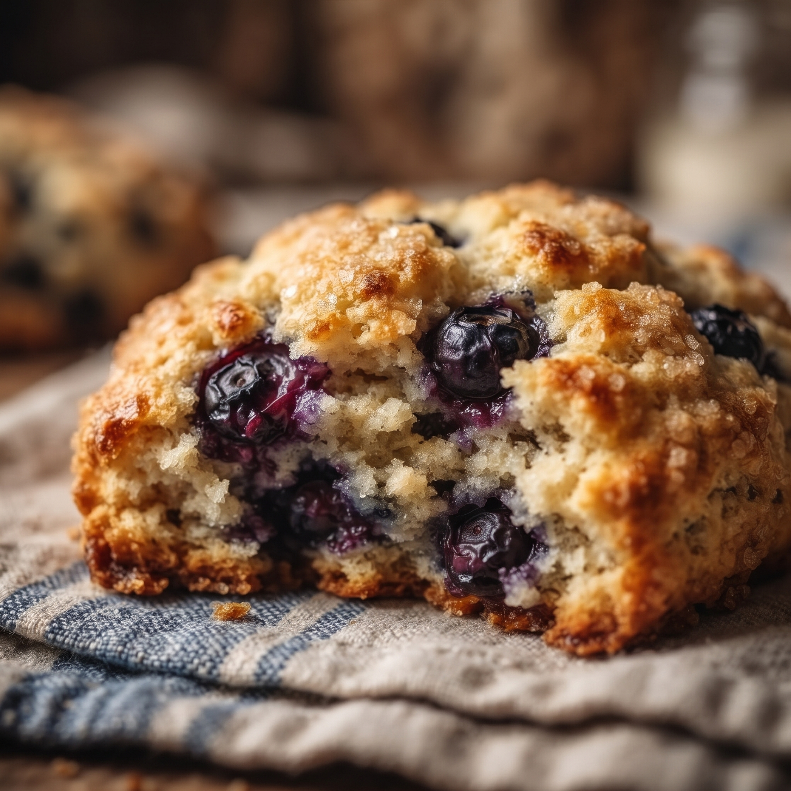

Scone

Description
A scone is a lightly sweetened single-serve baked good of British origin, characterized by its golden-brown exterior and tender, slightly crumbly interior. Made from a simple dough of flour, butter, sugar, and milk or buttermilk, it is often baked into round shapes or triangular wedges and served warm alongside tea. While classic varieties are plain or studded with dried fruit like currants, scones can also span savory flavors like cheddar and chive or sweet additions like blueberry and chocolate.
Ingredients
- 3 cups all-purpose flour, plus more for kneading
- 1/2 cup white sugar
- 5 teaspoons baking powder
- ½ teaspoon salt
- ¾ cup butter
- 1 cup milk
- 1 egg, beaten
Steps
- Gather all ingredients.
- Preheat the oven to 400 degrees F (200 degrees C). Lightly grease a baking sheet.
- Combine flour, sugar, baking powder, and salt in a large bowl; cut in butter with 2 knives or a pastry blender until mixture resembles coarse crumbs.
- Whisk milk and egg in a small bowl; gradually stir into flour mixture until moistened.
- Turn dough out onto a lightly floured surface and knead briefly, 5 or 6 turns.
- Pat or roll dough out into a 1/2-inch thick round. Cut into 8 wedge-shaped pieces and place onto the prepared baking sheet.
- Bake scones in the preheated oven until golden brown on top, about 15 minutes.
Home